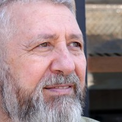
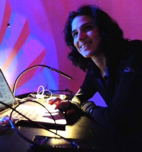
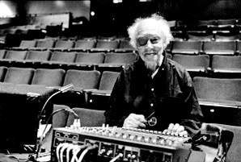
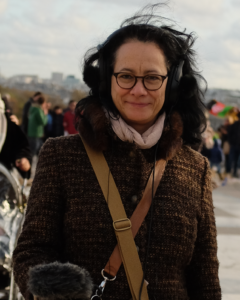
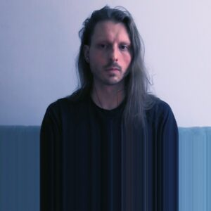
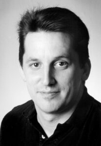
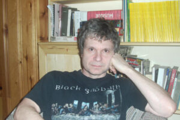
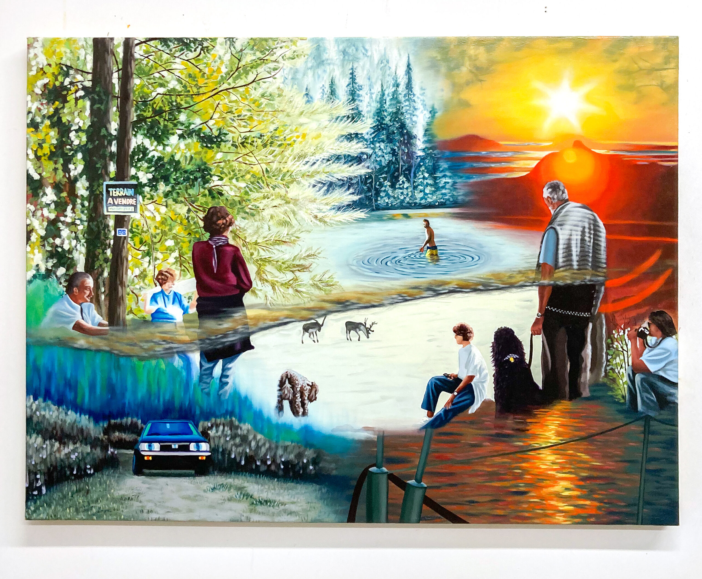

Nous remercions chaleureusement tous les compositeurs, artistes sonores, artistes visuels et multidisciplinaires de leur généreuse contribution à la plateforme Fonofone. On trouvera ici les ressources, intégrées aux banques de sons et d'images Fonofone, qu'ils/elles mettent gracieusement à votre disposition.











